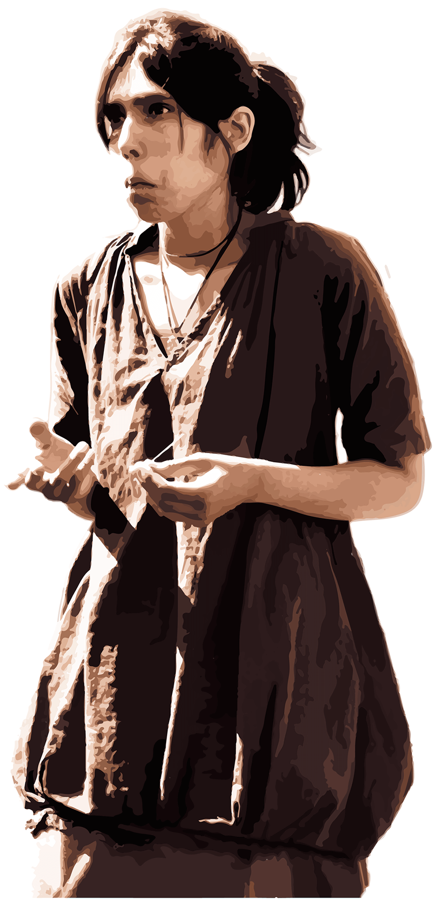

Áreas
Design gráfico
As embalagens são a maior parte do lixo que todos nós produzimos todos os dias. Por isso esta área, mais que qualquer outra,
tem de ser pensada para não ter impacto em nenhuma parte do seu ciclo, desde a produção até ao uso e por fim ao descarte,
o processo começa na natureza e acaba na mesma.
Os folhetos, assim como as etiquetas e outro material de publicidade e merchandising
deve ser pensado para ser facilmente decomposto, uma vez que o tempo de vida útil dos mesmos é, por norma, muito reduzido. Isso não
significa que não possam ser pensados para encantar e até mesmo terem outras utilidades antes de descartados.
As etiquetas e os rótulos
estão presentes em praticamente todas as áreas de negócio, sendo por isso temos de os repensar de forma a serem mais neutros no seu ciclo.
As etiquetas devem sempre ser feitas de forma a serem completamente e naturalmente recicláveis.
O impacto ambiental da impressão
têxtil é dos mais elevados no design, por isso é com muita cautela que procuramos, técnicas, materiais, fornecedores, para conseguir criar
efeitos impressionantes mesmo com utilização de técnicas antigas ou inusitadas. É uma área difícil, que os parceiros são tudo.
O design de livros é uma área distinta das outras que envolvem papel pois apesar do material ser o mesmo a finalidade é muito distinta
da publicidade, pensada para ser efémera. Um livro deve de ser pensado para ter durabilidade, para além de ser sempre uma obra de arte.
Imagem digital
Toda a criação começa por um desenho, seja qualquer for o meio usado para realizado esse desenho, tudo começa dele.
O desenho em lápis é ainda uma opção amiga do ambiente, e muito usada na Ethicco, mas pode não ser sempre a melhor opção,
e nem sempre é a que escolhemos. A ilustração digital é mais um dos pilares de todas as nossas criações.
Para além disso é também o que fazemos nos tempos livres. Edição e manipulação de fotografia, com os mais diferentes fins.
Desde recuperação de fotografias antigas, ajustes em fotografias não profissionais para melhorias, montagens e criações
completamente originais, todo o tipo de material para utilizar em todas as outras áreas e vertentes.
Vídeo
Edição e manipulação de vídeo, animações 2d e 3d e até mesmo pequenas stopmotions, para todo o tipo de fins, apresentação de empresas,
publicidades, conteúdos para redes sociais e muitas outras finalidades. Nesta área criamos sem limitações pois os recursos são
ilimitados.
3D
Criação de material 3d, personagens, ambientes...
Missão
A ETHICCO DESIGN
A Ethicco surge como reação as atuais formas de marketing e publicidade, que se tornaram inconscientes de valores morais como a justiça social, a proteção do ambiente e até mesmo os direitos humanos, focando apenas nos lucros financeiros.
Na Ethicco sabemos que se desejamos sobreviver a longo prazo temos de desenhar soluções que preservem o ambiente, pois é esse o nosso suporte existencial, assim como fortalecer as relações humanas e de interajuda.
E é com base nestes valores que trabalhamos para criar uma maior simbiose entre o ecossistema empresarial e o ecossistema natural de uma forma fluida e ética.
ETHICCO
Trabalhamos com projetos de todas as dimensões mas o nosso foco é em:
Pequenas empresas, em particular empresas com baixo orçamento mas alta preocupação ambiental.
Associações e Projetos sociais com fortes motivações éticas, humanitárias ou ecológicas.
Profissionais independentes que pretendam que a sua imagem reflita a sua posição em relação às questões ambientais/sociais.
O nosso único critério: Sejam simpáticos.
Equipa
POR ENQUANTO.
Sou apenas eu, mas estamos mesmo no início, profissional multifacetada na área da multimédia e artes plásticas e manuais,
com formação em manipulação de imagem, edição vídeo, criação 3d, animação e muito mais.
Com um estúdio no litoral Oeste, com duas salas interiores e muito espaço exterior para brainstorms em ambiente natural
mas com uma internet estável, mais um espaço de experimentação, com oficina de testes com ferramentas para trabalhar
diversos materiais: madeira ,metal, cabedais, papel, etc.

QUERES ENTRAR?
Achas que tens tudo para trabalhar connosco? Partilhas dos nossos valores, tens competências nesta área e gostavas de entrar
no desafio de desenhar o mundo de uma forma melhor?
Então entra em contato e vamos falar sobre como nos pudemos ajudar.
Maria João da Cunha
918035599
www.facebook.com/mariajoao.dacunha.9
thedoorsopenandclosed@gmail.com
Qualquer dúvida, questão ou sugestão, estamos aqui para ouvir.
Podem comunicar através de qualquer dos contactos acima, respondemos com o máximo de brevidade possível.
.png)